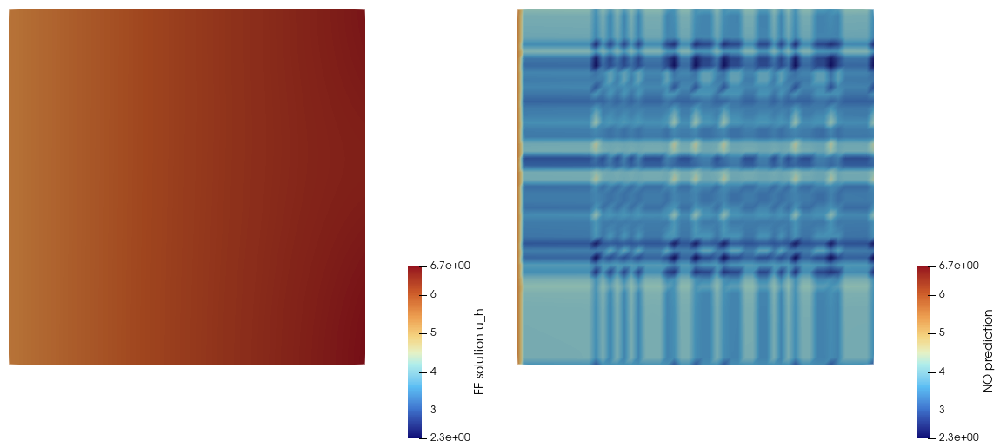

Tutorial: a Neural Operator surrogate for a parametric Poisson problem
This tutorial walks through test/poisson.jl line by line. It is meant for researchers who already know finite elements and basic deep learning, but have not yet seen how NonlinearROMs.jl wires the two together. By the end you should understand:
- how a parametric FE problem is expressed in
GridapROMs.jl(parameter spaces, parameterised coefficients, parametric operators/solvers), - the vocabulary
NonlinearROMs.jluses to turn FE snapshots into training data for a neural network (InputSpace,OutputSpace,DataFormatter), - what a Kernel Neural Operator (Kovachki et al.) is, the two different ways this package discretises its non-local integral kernel (an FE-quadrature measure vs. a radius graph), and its spectral (Fourier Neural Operator) alternative, and
- the offline/online split (
NeuralSolver/neural_operator/solve) that mirrors the rest ofGridapROMs.jl's reduced-order-modelling API.
The running example is a steady, linear diffusion-reaction-like problem on the unit square, parameterised by a 3-component parameter $\mu$:
\[-\nabla\cdot(a(\mu)\nabla u) = f(\mu) \ \text{in } \Omega, \qquad u = g(\mu) \ \text{on } \Gamma_D, \qquad a(\mu)\nabla u\cdot n = h(\mu) \ \text{on } \Gamma_N.\]
We train a network to map $\mu \mapsto u_h(\mu)$ directly – a non-intrusive surrogate for the FE solver, as opposed to a classical (POD/RB-based) reduced-order model.
using DrWatson
using Gridap
using GridapROMs
using GridapROMs.RBSteady
using NonlinearROMs1. The parameter space
Every parametric quantity is indexed by a ParamSpace: a box sampled by a Halton quasi-random strategy by default. Here $\mu\in\mathbb R^3$ ranges over $[1,10]\times[1,10]\times[1,10]$.
pdomain = (1,10,1,10,1,10)
pspace = ParamSpace(pdomain)Set of parameters in [[1, 10], [1, 10], [1, 10]], sampled with GridapROMs.ParamDataStructures.HaltonSampling(1)
2. The (parameter-independent) mesh and triangulations
The mesh itself does not depend on $\mu$, so it is built exactly as in plain Gridap: a $50\times 50$ Cartesian grid on $\Omega=(0,1)^2$, together with a Measure for the volume integrals and a dedicated BoundaryTriangulation/Measure pair for the Neumann boundary (tag 8, one side of the square).
L,H = 1,1
N = 50
domain = (0,L,0,H)
partition = (N,N)
model = CartesianDiscreteModel(domain,partition)
order = 1
degree = 2*order
Ω = Triangulation(model)
dΩ = Measure(Ω,degree)
Γn = BoundaryTriangulation(model,tags=[8])
dΓn = Measure(Γn,degree)GenericMeasure()3. Parameterised coefficients: ParamFunction/parameterise
Every coefficient is a closure of the parameter, μ -> (x -> value), lifted to a batched ParamFunction via parameterise so Gridap can assemble the weak form once for an entire batch of parameters instead of one at a time.
a(μ) = x -> exp(-x[1]/sum(μ))
aμ(μ) = parameterise(a,μ)
f(μ) = x -> 1.
fμ(μ) = parameterise(f,μ)
g(μ) = x -> μ[1]*exp(-x[1]/μ[2])
gμ(μ) = parameterise(g,μ)
h(μ) = x -> abs(cos(μ[3]*x[2]))
hμ(μ) = parameterise(h,μ)hμ (generic function with 1 method)4. The parametric weak form and FE operator
stiffness/rhs are the usual Gridap weak forms with every coefficient now parameterised. FEDomains just records which triangulation each residual/Jacobian integral lives on – bookkeeping GridapROMs.jl uses for hyper-reduction elsewhere, not needed in this tutorial itself. LinearParamFEOperator takes a right-hand side rhs(μ,v) instead of a residual, since a genuinely linear problem has no state u to evaluate one at.
stiffness(μ,u,v) = ∫(aμ(μ)*∇(v)⋅∇(u))dΩ
rhs(μ,v) = ∫(fμ(μ)*v)dΩ + ∫(hμ(μ)*v)dΓn
trian_res = (Ω,Γn)
trian_stiffness = (Ω,)
domains = FEDomains(trian_res,trian_stiffness)
reffe = ReferenceFE(lagrangian,Float64,order)
test = TestFESpace(Ω,reffe;conformity=:H1,dirichlet_tags=[1,3,7])
trial = ParamTrialFESpace(test,gμ)
feop = LinearParamFEOperator(rhs,stiffness,pspace,trial,test,domains)
fesolver = LinearFESolver(LUSolver())LinearFESolver()5. Generating FE snapshots
realisation draws nparams samples as one Realisation, and solve(fesolver,feop,μ) returns a single batched ParamFEFunction bundling every sample's solution (not a Vector of ordinary FEFunctions). Two disjoint sets are drawn: μ_train/uhμ_train (50 samples) become the network's training data in §7-9; μ/uhμ (one held-out sample) checks the trained surrogate in §10 against a solution it never saw.
μ_train = realisation(pspace;nparams=50)
uhμ_train = solve(fesolver,feop,μ_train)
μ = realisation(pspace;nparams=1)
uhμ = solve(fesolver,feop,μ)SingleFieldParamFEFunction():
num_cells: 2500
DomainStyle: Gridap.CellData.ReferenceDomain()
Triangulation: BodyFittedTriangulation()
Triangulation id: 56978429746651166646. Neural operators
NonlinearROMs.jl learns $\mu\mapsto u_h(\mu)$ as a neural operator: a network trained directly between function spaces rather than between the coordinates of one fixed grid. Concretely, it maps an input space $V_{\text{in}}=\text{span}\{x,a(\mu),f(\mu),g(\mu),h(\mu)\}$ of coordinates and PDE coefficients to an output space $V_{\text{out}}=\text{span}\{u_h(\mu)\}$ of FE solutions – exactly the one input/output pair §7 builds below.
Nothing in that picture actually requires a single input/output pair, though. More generally, training can reconcile several such spaces at once, $(V_{\text{in}}^1,\ldots,V_{\text{in}}^m)\to(V_{\text{out}}^1,\ldots,V_{\text{out}}^m)$, each potentially living on its own mesh or its own point set. This is exactly what join_spaces does across a MultiFieldFESpace's fields in the Stokes tutorial (velocity/pressure, one mesh, different point sets), and what MultiGraphInducedSpace does across genuinely different meshes in the moving-geometry Poisson tutorial – both reduce back to the single-space picture above once their point sets are reconciled onto one shared axis. This tutorial only ever needs the simplest case, one mesh and one space, built next.
7. From FE snapshots to training tensors
NonlinearROMs.jl represents every per-point quantity – spatial coordinates, PDE coefficients, solution fields – as a dense (D,N,K) array (D channels/components, N evaluation points, K samples/parameters), aliased AbstractInputData. This is the common tensor layout every neural layer in the package consumes and produces.
get_coordsretrieves the FE space's free, de-duplicated evaluation points (masking away repeated coordinates, e.g. the two components of a vector-valued dof sharing one node, and excluding Dirichlet-only dofs).- A
FeatureBundlebundles severalParamFunctions (here, all four PDE coefficients) that will be concatenated channel-wise into the network's fixed per-point inputa(x). InputSpaceevaluates that bundle, and the coordinates themselves, into two(D,N,K)tensors.OutputSpacedoes the analogous thing for the solutionuhμ_train, evaluated at the same points.
Both input_space and features are defined as functions of μ precisely so the exact same recipe can build the training tensors (from μ_train) and, later, the held-out test tensors (from μ) in §10.
dir = datadir("poisson")
x = get_coords(test)
features(μ) = FeatureBundle((aμ(μ),fμ(μ),gμ(μ),hμ(μ)))
input_space(μ) = InputSpace(x,features(μ))
output_space = OutputSpace(uhμ_train)OutputSpace{GridapROMs.ParamFESpaces.TrialParamFESpace{Gridap.FESpaces.UnconstrainedFESpace{Vector{Float64}, Gridap.FESpaces.NodeToDofGlue{Int32}}}, Array{Float32, 3}}(TrialParamFESpace(), Float32[5.5319734 5.5635986 … 6.6450176 6.6649;;; 3.2827878 3.3152187 … 4.3945794 4.3992643;;; 7.7826586 7.8149567 … 8.943077 8.963892;;; … ;;; 1.4543589 1.4864957 … 2.5511835 2.5540745;;; 5.954594 5.986943 … 7.106222 7.126276;;; 3.7080421 3.743863 … 4.903372 4.9131103])8. The training loss: an energy norm
EnergyLoss wraps the Gram matrix X of one of GridapROMs' norms (ℓ2(), L2(), H1()), assembled on fspace's own (D,N,K) point layout (one representative dof per point) rather than on the raw FE dof numbering, and trains on the MSE between Xŷ and Xy rather than a plain pointwise MSE. For this scalar, order-1 field the two numberings coincide one-to-one, so EnergyLoss(H1(),fspace) is simply the $H^1$ (mass + stiffness) form.
fspace = FunctionSpace(test)
loss = EnergyLoss(H1(),fspace)(::EnergyLoss{SparseArrays.SparseMatrixCSC{Float32, Int64}}) (generic function with 2 methods)9. Test 1 – a Kernel Neural Operator discretised on the FE mesh
A KernelNeuralModel implements the iterative kernel-integral architecture of Kovachki et al.,
\[v_{t+1}(x) = \sigma\big(W v_t(x) + b(x) + (K_t v_t)(x)\big), \qquad (K_t v)(x) = \int \kappa_\theta(x,y,\ldots)\,v(y)\,\mathrm dy,\]
built as a Lux.Chain of
- a pointwise Lift (
Dense) from the input channels to the first hidden width, - one
KernelNeuralLayerper interior transition ofhidden_layers(herehidden_layers=(16,16)has only one such transition, so there is exactly one non-local layer), - a pointwise Project (
Dense) down to the output dimension.
What makes a layer "non-local" is how the integral $(K_t v)(x)$ is discretised, i.e. the InducedMeasure passed through style. FunctionSpace wraps an existing Gridap FESpace/triangulation; InducedMeasure then builds its weights from the FE mass matrix $M_{ij}=\int \phi_i\phi_j\,\mathrm d\Omega$ (via compute_weights(::FunctionSpace{<:FESpace})), so $(K_t v)(x)$ becomes a sparse matrix-vector product with M – a discretisation entirely implied by the FE mesh you already have, no extra geometric data structure needed.
Internally, every evaluation of κ_θ is fed (x,a(x)) by default (see DataFormatter: pass_coords=true, pass_features=true, pass_new_data=false unless requested); kv/integration then combine κ_θ's output with the running hidden state v and apply M.
NeuralSolver bundles the full-order fesolver (used purely for bookkeeping/consistency with the rest of GridapROMs.jl's ROM API) with the model, loss, optimiser and training schedule. neural_operator runs the offline phase: it fetches/normalises the training tensors and trains the Lux.Chain (on a Reactant/XLA device, with Enzyme-computed gradients), returning a NeuralOperator that bundles the trained weights with the normalisation statistics needed to run it again later. solve(solver,op,input_space(μ)) is the online phase: a single forward pass of the trained network on the held-out parameter μ. to_element converts the raw (D,N,K) prediction tensor back into a genuine Gridap FEFunction (undoing §7's tensorisation), and visualise writes the true/predicted/error fields to a .vtu file for inspection in ParaView.
fmodel = KernelNeuralModel(fspace;hidden_layers=(16,16),activation=tanh)
solver = NeuralSolver(fmodel;epochs=200,loss=loss,print_every=50)
op = neural_operator(solver,input_space(μ_train),output_space)
pred_uμ = solve(solver,op,input_space(μ))
pred_uhμ = to_element(OutputSpace(uhμ),pred_uμ)
visualise(dir,uhμ,pred_uhμ;variable_name="uh_gridap")(["/home/runner/work/NonlinearROMs.jl/NonlinearROMs.jl/docs/data/poisson/plot/uh_gridap.vtu"],)10. Test 2 – the same architecture on a radius graph (GNO)
GraphInducedSpace discretises the exact same KernelNeuralModel recipe differently: it builds a WeightedSimpleDiGraph by connecting every pair of points within radius of each other (a NearestNeighbors.BallTree radius query), and (K_t v)(x) becomes a graph message-passing step – gather each edge's source/destination features (gather_data), apply κ_θ, and sum ("integrate") into each destination vertex (scatter_data), normalised by in-degree. This is the classic Graph Neural Operator (GNO) formulation: unlike the FE mass-matrix measure of §9, it needs no underlying FE space at all, only a point cloud and a radius, which is why the same machinery scales to the multi-mesh case of §6/the moving-geometry Poisson tutorial.
Everything else – the loss, the training loop, the online solve, the visualisation – is identical to §9, swapping only fspace for gspace. This symmetry (model/solver code oblivious to which InducedMeasure backs the kernel) is the point of the KernelStyle/InducedMeasure abstraction.
mesh_size = 1/N
gspace = GraphInducedSpace(test;radius=2*mesh_size)
gmodel = KernelNeuralModel(gspace;hidden_layers=(16,16),activation=tanh)
solver = NeuralSolver(gmodel;epochs=200,loss=loss,print_every=50)
op = neural_operator(solver,input_space(μ_train),output_space)
pred_uμ = solve(solver,op,input_space(μ))
pred_uhμ = to_element(OutputSpace(uhμ),pred_uμ)
visualise(dir,uhμ,pred_uhμ;variable_name="uh_gno")(["/home/runner/work/NonlinearROMs.jl/NonlinearROMs.jl/docs/data/poisson/plot/uh_gno.vtu"],)11. Test 3 – a Fourier Neural Operator (FNO)
The third KernelStyle replaces the integral against a measure with a spectral convolution (Li et al.): FourierStyle builds every hidden layer's kernel as a FourierKernel, which Fourier-transforms the hidden state along the point axis, keeps only its first truncation modes, mixes the channels with one complex matrix per retained mode, and transforms back,
\[(K_t v)(x) = \mathcal F^{-1}\big(R_\theta\cdot(\mathcal F v)\big)(x), \qquad (R_\theta)_k = 0 \ \text{for } k > \texttt{truncation}.\]
No InducedMeasure is involved, so the model is built from the style alone, and its kernel sees only the running hidden state v (the default DataFormatter of a FourierStyle passes neither x nor a(x)).
The FFT treats the points as uniformly spaced samples in the order they are stored. Only on points ordered along a uniform 1D grid is $K_t$ a genuine convolution; on the free dofs of a 2D FE space, as here, it is a trainable global operator whose meaning depends on the dof ordering, so the result should not be read as a faithful FNO.
kmodel = KernelNeuralModel(FourierStyle(truncation=12);hidden_layers=(16,16),activation=tanh)
solver = NeuralSolver(kmodel;epochs=200,loss=loss,print_every=50)
op = neural_operator(solver,input_space(μ_train),output_space)
pred_uμ = solve(solver,op,input_space(μ))
pred_uhμ = to_element(OutputSpace(uhμ),pred_uμ)
visualise(dir,uhμ,pred_uhμ;variable_name="uh_fno")(["/home/runner/work/NonlinearROMs.jl/NonlinearROMs.jl/docs/data/poisson/plot/uh_fno.vtu"],)12. Inspecting the result
Opening datadir("poisson")/plot/uh_gridap.vtu (or uh_gno.vtu, uh_fno.vtu) in ParaView shows three fields for the (first) test sample: the true FE solution (uh_gridap), the network's prediction (approx_uh_gridap), and their difference (err_uh_gridap). Rendered directly from that .vtu file, on a shared colour scale:

This page was generated using Literate.jl.